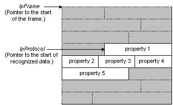

Network Monitor calls the AttachProperties function to map the properties that exist in a piece of recognized data. The AttachProperties function maps the properties to a specific location.
Network Monitor uses the following process to parse the data in a frame.
When Network Monitor calls the AttachProperties function for the recognized data, the parser that is called must parse the data, and then map each existing property to a location in the recognized data. The parser determines which properties exist, and where each property is located in the data. The following figure shows parser-recognized data.

During the implementation of AttachProperties, you must call one of the following functions for each property that exists in a data frame.
[!Note]
It is recommended that you use the data as it exists in the capture.
Â
The following procedure identifies the steps necessary to implement AttachProperties.
To implement AttachProperties
The following is a basic implementation of AttachProperties. Be aware that the example does not include either the code to determine which properties exist, or the code to locate the properties.
#include <windows.h>
LPBYTE BHAPI MyProtocolAttachProperties( HFRAME hFrame,
LPBYTE pMacFrame,
LPBYTE pBLRPLATEFrame,
DWORD MacType,
DWORD BytesLeft,
HPROTOCOL hPreviousProtocol,
DWORD nPrevProtocolOffset,
DWORD InstData)
{
PBLRPLATEHDR pBLRPLATEHdr = (PBLRPLATEHDR)pBLRPLATEFrame;
// Attach summary property.
AttachPropertyInstance( hFrame,
BLRPLATEPropertyTable[BLRPLATE_SUMMARY].hProperty,
(WORD)BytesLeft,
(LPBYTE)pBLRPLATEFrame,
0, // No Help file.
0, // Indent level.
0); // Data flag.
// Attach signature property.
AttachPropertyInstance( hFrame,
BLRPLATEPropertyTable[BLRPLATE_SIGNATURE].hProperty,
sizeof(DWORD),
&(pBLRPLATEHdr->Signature),
0, // No Help file.
1, // Indent level.
0); // Data flag.
// Attach opcode.
AttachPropertyInstance( hFrame,
BLRPLATEPropertyTable[BLRPLATE_OPCODE].hProperty,
sizeof(WORD),
&(pBLRPLATEHdr->Opcode),
0, // No Help file.
1, // Indent level.
0); // Data flag.
// Attach flags summary.
AttachPropertyInstance( hFrame,
BLRPLATEPropertyTable[BLRPLATE_FLAGS_SUMMARY].hProperty,
sizeof(BYTE),
&(pBLRPLATEHdr->Flags),
0, // No Help file.
1, // Indent level.
0); // Data flag.
// Attach flags decode.
AttachPropertyInstance( hFrame,
BLRPLATEPropertyTable[BLRPLATE_FLAGS_FLAGS].hProperty,
sizeof(BYTE),
&(pBLRPLATEHdr->Flags),
0, // No Help file.
2, // Indent level.
0); // Data flag.
RETURN null;
}
Â
Â